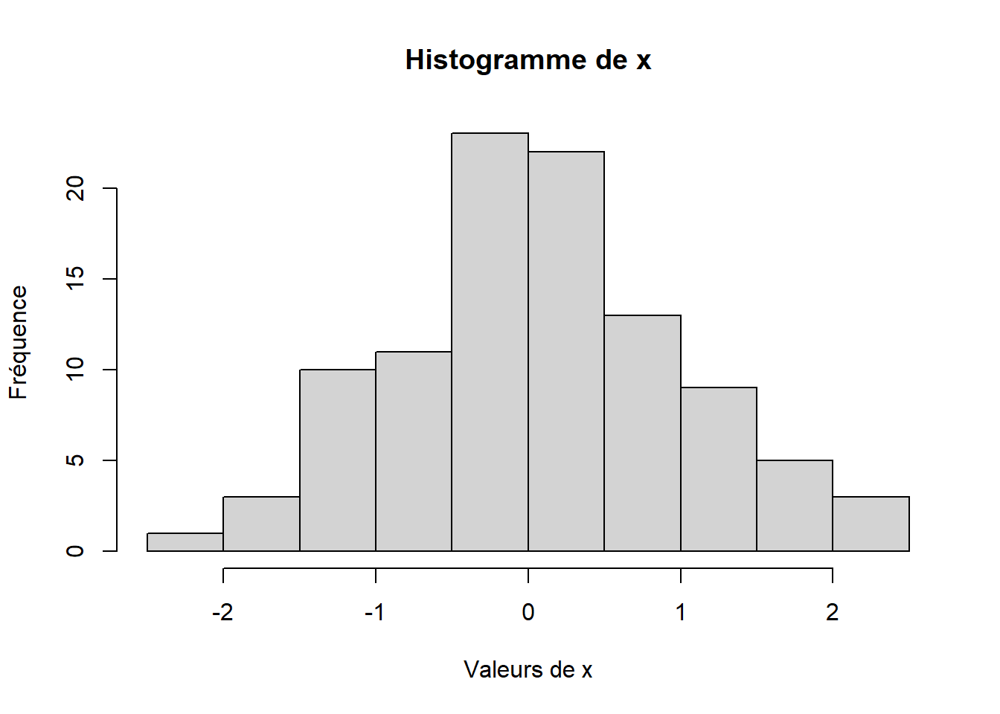
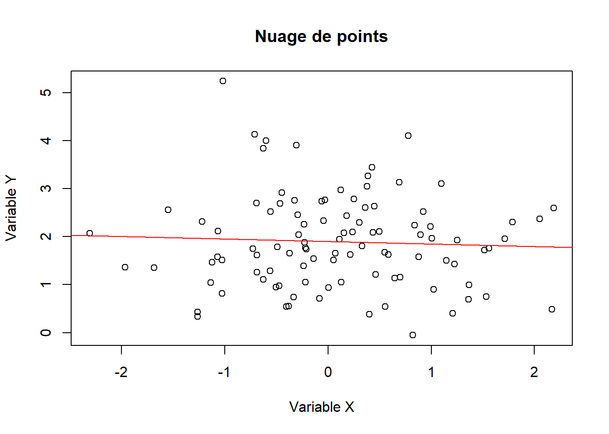

# 1. Quelques fonctions
#Nous utilisons la fonction rnorm() pour générer 100 nombres aléatoires suivant une distribution normale pour les variables x et y.
#La fonction set.seed() est utilisée pour fixer la graine aléatoire, assurant ainsi la reproductibilité des résultats.
set.seed(123)
x <- rnorm(100)
y <- rnorm(100, mean = 2, sd = 1)
# 2. Affichage des données
# Nous affichons les valeurs des variables x et y.
print(x) [1] -0.560475647 -0.230177489 1.558708314 0.070508391 0.129287735
[6] 1.715064987 0.460916206 -1.265061235 -0.686852852 -0.445661970
[11] 1.224081797 0.359813827 0.400771451 0.110682716 -0.555841135
[16] 1.786913137 0.497850478 -1.966617157 0.701355902 -0.472791408
[21] -1.067823706 -0.217974915 -1.026004448 -0.728891229 -0.625039268
[26] -1.686693311 0.837787044 0.153373118 -1.138136937 1.253814921
[31] 0.426464221 -0.295071483 0.895125661 0.878133488 0.821581082
[36] 0.688640254 0.553917654 -0.061911711 -0.305962664 -0.380471001
[41] -0.694706979 -0.207917278 -1.265396352 2.168955965 1.207961998
[46] -1.123108583 -0.402884835 -0.466655354 0.779965118 -0.083369066
[51] 0.253318514 -0.028546755 -0.042870457 1.368602284 -0.225770986
[56] 1.516470604 -1.548752804 0.584613750 0.123854244 0.215941569
[61] 0.379639483 -0.502323453 -0.333207384 -1.018575383 -1.071791226
[66] 0.303528641 0.448209779 0.053004227 0.922267468 2.050084686
[71] -0.491031166 -2.309168876 1.005738524 -0.709200763 -0.688008616
[76] 1.025571370 -0.284773007 -1.220717712 0.181303480 -0.138891362
[81] 0.005764186 0.385280401 -0.370660032 0.644376549 -0.220486562
[86] 0.331781964 1.096839013 0.435181491 -0.325931586 1.148807618
[91] 0.993503856 0.548396960 0.238731735 -0.627906076 1.360652449
[96] -0.600259587 2.187332993 1.532610626 -0.235700359 -1.026420900print(y) [1] 1.28959344 2.25688371 1.75330812 1.65245740 1.04838143 1.95497228
[7] 1.21509553 0.33205806 1.61977348 2.91899661 1.42465304 2.60796432
[13] 0.38211729 1.94443803 2.51940720 2.30115336 2.10567619 1.35929399
[19] 1.15029565 0.97587121 2.11764660 1.05252539 1.50944256 1.74390781
[25] 3.84386201 1.34805010 2.23538657 2.07796085 1.03814337 1.92869191
[31] 3.44455086 2.45150405 2.04123292 1.57750317 -0.05324722 3.13133721
[37] 0.53935993 2.73994751 3.90910357 0.55610684 2.70178434 1.73780251
[43] 0.42785584 0.48533235 0.39846383 1.46909348 0.53824442 2.68791677
[49] 4.10010894 0.71296952 2.78773885 2.76904224 2.33220258 0.99162339
[55] 1.88054739 1.71960466 2.56298953 1.62756124 2.97697339 1.62541914
[61] 3.05271147 0.95082299 0.73984476 5.24103993 1.58314241 2.29822759
[67] 2.63656967 1.51621937 2.51686204 2.36896453 1.78461949 2.06529303
[73] 1.96593275 4.12845190 1.25866390 0.90400373 2.03778840 2.31048075
[79] 2.43652348 1.54163467 0.93667387 3.26318518 1.65034961 1.13448714
[85] 1.76372043 1.80282411 3.10992029 2.08473729 2.75405379 1.50070798
[91] 2.21444531 1.67531409 2.09458353 1.10463664 0.68919847 3.99721338
[97] 2.60070882 0.74872864 1.38883408 0.81451992# 3. Calcul de statistiques descriptives
# Nous calculons la moyenne et l'écart type de la variable x, ainsi que les quantiles de la variable x.
mean_x <- mean(x)
sd_x <- sd(x)
quantile_x <- quantile(x)
# 4. Affichage des statistiques
# Nous affichons les statistiques calculées pour la variable x.
print(mean_x)[1] 0.09040591print(sd_x)[1] 0.9128159print(quantile_x) 0% 25% 50% 75% 100%
-2.30916888 -0.49385424 0.06175631 0.69181917 2.18733299 # 5. Création d'un histogramme
# Nous créons un histogramme pour visualiser la distribution des valeurs de la variable x.
hist(x, main = "Histogramme de x", xlab = "Valeurs de x", ylab = "Fréquence")
# 6. Création d'un nuage de points
# Nous créons un nuage de points pour visualiser la relation entre les variables x et y.
plot(x, y, main = "Nuage de points", xlab = "Variable X", ylab = "Variable Y")
# 7. Régression linéaire
# Nous ajustons un modèle de régression linéaire pour prédire la variable y en fonction de la variable x.
model <- lm(y ~ x)
summary(model)
Call:
lm(formula = y ~ x)
Residuals:
Min 1Q Median 3Q Max
-1.9073 -0.6835 -0.0875 0.5806 3.2904
Coefficients:
Estimate Std. Error t value Pr(>|t|)
(Intercept) 1.89720 0.09755 19.448 <2e-16 ***
x -0.05247 0.10688 -0.491 0.625
---
Signif. codes: 0 '***' 0.001 '**' 0.01 '*' 0.05 '.' 0.1 ' ' 1
Residual standard error: 0.9707 on 98 degrees of freedom
Multiple R-squared: 0.002453, Adjusted R-squared: -0.007726
F-statistic: 0.241 on 1 and 98 DF, p-value: 0.6246# 8. Affichage de la droite de régression sur le nuage de points
# Maintenant on va superposer la droite de régression sur le nuage de points pour visualiser la relation linéaire.
abline(model, col = "red")
# 9. Test statistique
# Nous effectuons un test de Student pour comparer les moyennes des deux échantillons (variables x et y).
t_test <- t.test(x, y)
print(t_test)
Welch Two Sample t-test
data: x and y
t = -13.552, df = 197.35, p-value < 2.2e-16
alternative hypothesis: true difference in means is not equal to 0
95 percent confidence interval:
-2.064286 -1.539808
sample estimates:
mean of x mean of y
0.09040591 1.89245320 # 10. Création d'une fonction personnalisée
# Nous définissons une fonction personnalisée qui prend deux arguments a et b, et retourne leur somme des carrés.
my_function <- function(a, b) {
result <- a^2 + b^2
return(result)
}
# 11. Utilisation de la fonction personnalisée
# Nous utilisons la fonction personnalisée pour calculer la somme des carrés de 3 et 4.
result <- my_function(3, 4)
print(result)[1] 25